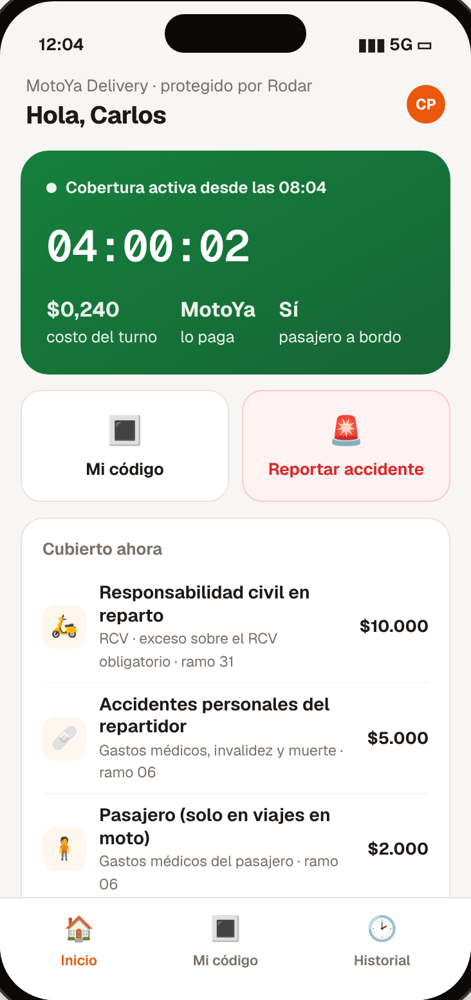
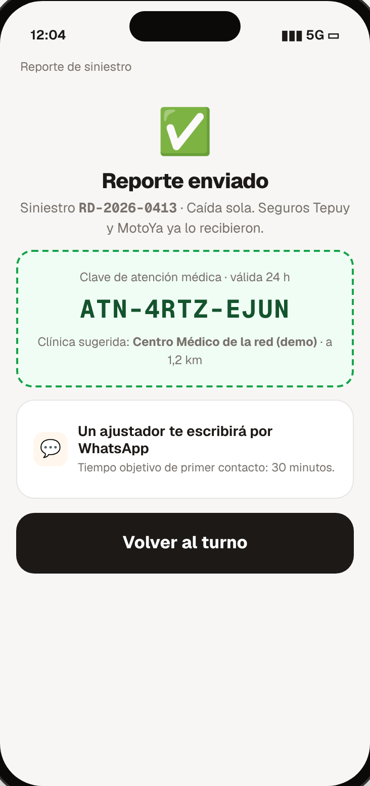
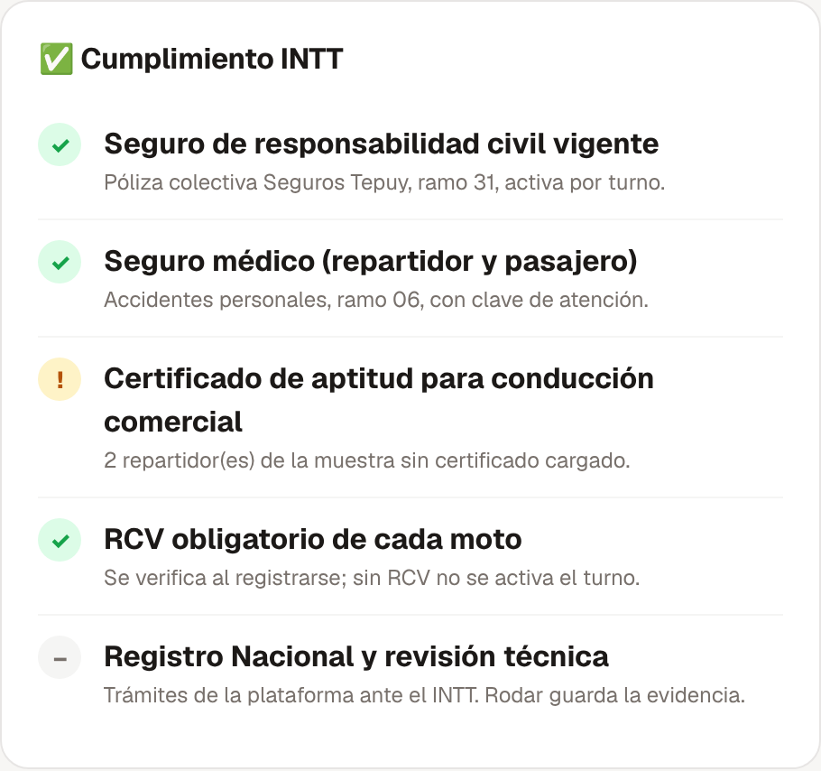
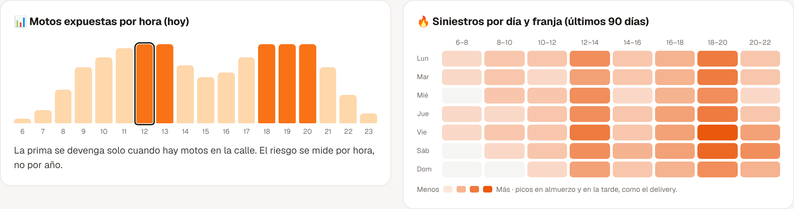

El problema
El INTT exige seguros a las plataformas, pero el repartidor trabaja por horas.
- Desde agosto de 2026 las empresas de delivery deben mantener vigentes un seguro de RC y un seguro médico.
- La plataforma responde aunque la moto sea del repartidor.
- Una póliza anual fija cobra también por cuentas que casi no trabajan.
La solución
Una póliza colectiva que se activa y se apaga con cada turno.
- RC en reparto sobre el RCV obligatorio (ramo 31).
- Accidentes personales del repartidor y del pasajero (ramo 06).
- La plataforma paga solo las horas en la vía, con tope diario.
Cómo funciona
- La app se integra por API: abre y cierra turnos.
- La cobertura se activa sola al conectarse el repartidor.
- Se verifica en la calle con un código, en tiempo real.
- Los siniestros se reportan en 3 pasos, con clave médica si hay heridos.

Turno cubierto con costo por minuto.

Reporte y clave médica.

Panel de la plataforma: cumplimiento INTT, constancia y flota cubierta en vivo.

Panel de la aseguradora: exposición por hora y mapa de siniestros.
Diferenciadores
- Activación por turno, no por año.
- Verificación pública de la cobertura en tiempo real.
- Control de requisitos: sin RCV vigente no hay turno.
- Constancia lista para el INTT.
Aplicabilidad en Venezuela
- Responde a la norma del INTT de agosto de 2026.
- 270–300 mil motos en delivery y transporte móvil.
- Aseguradora e intermediario autorizados; RCV obligatorio intacto.
Modelo de negocio
- Comisión tecnológica sobre la prima por hora.
- Suscripción de la plataforma: panel, constancias y API.
- En la demo, 46 % menos que una póliza fija por moto (referencial).
Estado y próximos pasos
- Hoy: prototipo en línea con 4 vistas conectadas.
- 0–3 meses: validación con 2–3 plataformas y condicionado por turno.
- Luego: piloto con API en producción.